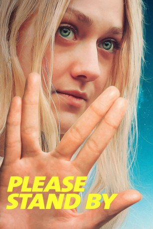

#9412 Please Stand By
 
 IMDB-Wertung: 6.7 / 10
IMDB-Wertung: 6.7 / 10  Metascore: 49
Metascore: 49 
Für Wendy ist die Welt kein leichtes Pflaster. Die brillante junge Frau mit ihrem Hang zur Heiterkeit könnte ein unbeschwertes Leben führen – wäre da nicht ihr Autismus. Für Wendy sind Menschen ein schwer zu entschlüsselndes Rätsel, dabei will auch sie nur ihren Platz in der Welt einnehmen. Eines Tages erfährt sie von einem Drehbuch-Wettbewerb in Hollywood. Ihr Ausbruch aus dem Heim katapultiert sie auf die Reise ihres Lebens, an deren Ende sie ihre 500-seitige Star-Trek- Geschichte für den Wettbewerb einreichen möchte.
Jahr: 2017
Dauer: 92 Minuten
FSK: 6
Land: USA Studio: Magnolia PicturesTonspuren: DD5.1 - ,
Untertitel: Deutsch, Englisch,
Auflösung: 1080p (1920x800) Größe: 6973 MB
Genre: Drama, Komödie
Regisseur: Ben Lewin
Drehbuch: Michael Golamco, Michael Golamco
Soundtrack: Heitor Pereira
Darsteller:
 Dakota Fanning als Wendy
Dakota Fanning als Wendy Alice Eve als Audrey
Alice Eve als Audrey Toni Collette als Scottie
Toni Collette als Scottie- Lara Lihiya als Madeline
 Tony Revolori als Nemo
Tony Revolori als Nemo- Michael Stahl-David als Jack
 Matt Corboy als TV Preesenter
Matt Corboy als TV Preesenter- River Alexander als Sam
 Matty Cardarople als Trivia Guy #1
Matty Cardarople als Trivia Guy #1- Edward Hong als Cinnabon Guy
- Madeleine Murden als Young Audrey
- Farrah Mackenzie als Young Wendy
- B Z Cullins als Male Bus Driver
 Denise Dowse als Doris, Bus Driver
Denise Dowse als Doris, Bus Driver- Ana Rey als Ticket Agent
 Jessica Rothe als Julie
Jessica Rothe als Julie- Heath McGough als Cashier
- Marla Gibbs als Rose
- Stephanie Allynne als Nurse
- Jacob Wysocki als Male Nurse
 John Prosky als Hospital Administrator
John Prosky als Hospital Administrator- Rigo Obezo als Bakersfield Cop
- Laura Innes als Ticket Agent #1
 Patton Oswalt als Officer Frank
Patton Oswalt als Officer Frank Robin Weigert als Officer Doyle
Robin Weigert als Officer Doyle William Stanford Davis als Creed (uncredited)
William Stanford Davis als Creed (uncredited)- Elaine Anne Furst als Bus Passenger (uncredited)
 Bea Miller als Tracy (uncredited)
Bea Miller als Tracy (uncredited)- Elliott James Thomas Moore als Teenager (uncredited)
- Mario Revolori als Orderly (uncredited)
- Amy Tolsky als Bus Passenger (uncredited)
- Gordon Vasquez als Flea Market Vendor (uncredited)
- Joe Williamson als Police Officer (uncredited)
- Cuete Yeska als Orderly (uncredited)
- Lexi Aaron als Herself
- Dominique Brown als Himself
- Brittanie Sanders als Herself
- Cindy Miyashiro als Herself
- Dan Cordell als Richard
- Blaster als Pete the Pup
- Bill Kottkamp als Trivia Guy #2
- Poppy Gagnon als Small Child
- Shawn Roe als Derrick
- Roger V. Burton als Patterson
- Todd Wagner als Doctor
- David Brisbin als Ticket Agent #2
- Roger Berard als Golf Cart Driver
- Joseph A. Nunez als The Overseer
- Lena Evans als (uncredited)
Datei: X:\2017(N-Z)\Please Stand By (2017, FSK6, 1920x800).mkv seit 30.08.2018
Festplatte: HD 2017(A-Z)-2018(A-F)
 Es gibt insgesamt 170 Filme in der Gruppe '2017(N-Z)'
Es gibt insgesamt 170 Filme in der Gruppe '2017(N-Z)'